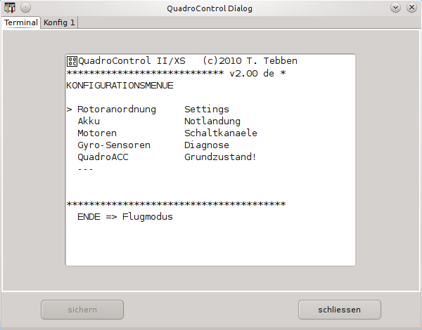
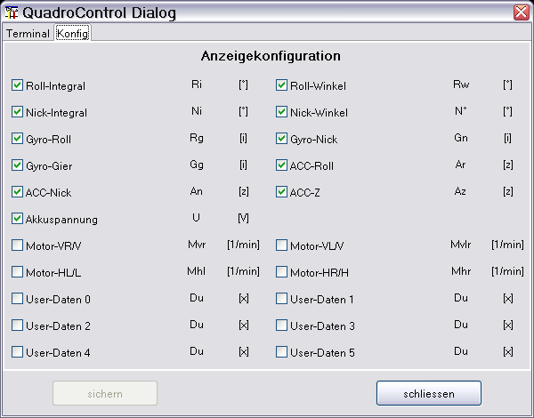

Der gezeigte Gerätedialog dient zur Konfiguration bzw. Synchronisation der Fernsteuerung mit der QuadroControl. Entsprechende Ausgaben werden über das Terminalfenster sichtbar.

Der gezeigte Tabulator des Gerätedialoges dient zur Konfiguration der Anzeige. Ausgeblendet werden alle Kurven, die nicht selektiert sind. Änderungen der Anzeigekonfiguration werden durch sichern auch für nachfolgende Datensätze angewendet.

Hinweis: Um die angezeigten Kurven möglichst übersichtlich zu halten, werden bei einer laufenden Aufnahme auch Kurven ausgeblendet, obwohl selektiert, die keine sinnvollen Daten enthalten z. B. nur Nullen!